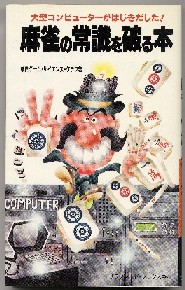

いかに牌式が便利な存在であろうと、清一色における聴牌形の全解明を手作業で行うのは不可能である。もちろん今なら家庭用パソコンでチョイチョイだが、昭和50年頃にそんな便利なものはない。
そんな状況のところへマイコンなるものが登場！。おお、コンピュータなら計算はお手の物。さっそく電気街へマイコンなるものを買いに走った。（笑）
「すいません、マイコンのことで聞きたいのですが」
「はい、どんなことでせう」
「マイコンって何でも計算できるんですよね？」
「まぁ、そうですね」
「たとえば麻雀のテンパイ型なんかも計算できるでしょうか？」
「(?。?)」
「たとえばこれは何待ちで、これは何待ちかということを分類するという....」
「え〜と、あのですね、コンピュータは何でも計算できますけど、プログラムというものが必要です」
「そのプログラムってのも、ここで売ってますか」
「いや、特殊なものはお客さんの方で作るンですよ・・・・」
「(@.@)」
というようなわけで訳が分からず、そのときは買うのを断念。その後、マイコン教室へ通ったりしていた昭和55年の夏、友人がシャープのMZ80P3なるマイコンを購入した。「こりはチャンス！」というので、その友人を説き伏せ、清一色の全聴牌型の検出にチャレンジすることになった。
友人も衝動買いしたものの、マイコン and プログラムのことは何も知らない。それでも悪戦苦闘の後、昭和56年の夏、ベーシックによるプログラムで清一色の全聴牌型を検出することに成功した。(^0^)/
さっそく８月、この成果を「コンピュータによる清一の全解明」と題して月刊プロ麻雀で発表した。するとそれからわずか３カ月後、「麻雀の常識を破る本」という新書本が出た（二見書房・S57/11/15・朝日ゲームサイエンス227p）。これはたしか朝日新聞の麻雀好きな記者連が会社の大型コンピュータを利用して、清一を分析をしたというもの。

朝日新聞の総力をあげた(？)というだけあって、ある意味ではσ(-_-)の分析よりはるかに詳しかった。しかしなんだかんだと言っても基本は同じ。わずか３カ月の差で朝日新聞に勝った(‾＾‾) しかしそのときの朝日の大型コンピュータ、いまとなっては私の愛用ＰＣの半分の能力もないだろうな・・・・
いまならちょっと手慣れた人ならちょいちょいと数日間で検出できるデータと思うが、せっかくなので、また蔵から出してきた。(^0^；
<<<手牌四張>>>
◎マザー型４式
|
分類 |
牌式 |
型式 |
牌姿 |
* |
| 1 |
04M01 |
400000000 |
--- |
1111 |
未槓子 |
| 2 |
04M02 |
220000000 |
DW |
1122 |
純面子 |
| 3 |
04M03 |
130000000 |
DTP |
1222 |
純面子 |
| 4 |
04M04 |
111100000 |
DT2 |
1234 |
純面子 |
| 5 |
04M05 |
112000000 |
DT |
1233 |
純面子 |
※型式や純面子のことは、またいずれ。
聴牌型
一門聴・・・１３５型 二門聴・・・１０２型 三門聴・・・１２型
総数・・・・・２４９型 全和了型・・・１３５型
聴牌型イコール和了型数とならないことに妙な気がするかも知れないが、これはアガリ牌は異なっても和了形は同じになるものが多々ある為。
<<<手牌七張>>>
◎マザー型11式
|
分類 |
牌式 |
型式 |
牌姿 |
面子型 |
| 1 |
7M01 |
340000000 |
DPJ |
1112222 |
純面子 |
| 2 |
7M02 |
124000000 |
DTR |
1223333 |
純面子 |
| 3 |
7M03 |
133000000 |
DTPK |
1222333 |
純面子 |
| 4 |
7M04 |
223000000 |
DWP |
1122333 |
純面子 |
| 5 |
7M05 |
111400000 |
DT |
1234444 |
純面子 |
| 6 |
7M06 |
112300000 |
DTR |
1233444 |
複面子 |
| 7 |
7M07 |
122200000 |
DR |
1223344 |
複面子 |
| 8 |
7M08 |
111130000 |
DT2R |
1234555 |
純面子 |
| 9 |
7M09 |
111220000 |
DW |
1234455 |
複面子 |
| 10 |
7M10 |
111112000 |
DR |
1234566 |
複面子 |
| 11 |
7M11 |
111111100 |
DT3 |
1234567 |
純面子 |
聴牌型
一門聴・・・１０３７型 二門聴・・・１０４６型 三門聴・・・・２４８型
四門聴・・・６４型 五門聴 ・・・・・１１型
総 数・・・・２４０６型 全和了型・・・・９９６型
面白いことに、一門張より二門張のほうが数が多い。
手牌七張となると、筋待ち型が登場する。これは各筋とも純面子型７式、複面子型５式の計12式。そのうち二五八聴12式を記す。
純面子型(型式省略)
. . .
(1) 011111110 ２３４５６７８
. . .
(2) 011121100 ２３４５５６７
. . .
(3) 001121110 ３４５５６７８
. . .
(4) 020031100 ２２５５５６７
. . .
(5) 020001130 ２２６７８８８
. . .
(6) 001130020 ３４５５５８８
. . .
(7) 031100020 ２２２３４８８
複面子型(型式省略)
. . .
(8) 201111100 １１３４５６７
. . . ^ ^
(9) 021111100 ２２３４５６７
. . . ^ ^
(10) 001131100 ３４５５５６７
. . . ^ ^
(11) 001111120 ３４５６７８８
. . . ^ ^
(12) 001111102 ３４５６７９９
^ ^
※ ^ ^ 部分は余剰面子
＃ブラウザの都合で和牌門がズレていたらゴメンm(_
_)m
<<<手牌十張>>>
|
分類 |
牌式 |
型式 |
牌姿 |
| 1 |
10M01 |
244000000 |
DR |
1122223333 |
| 2 |
10M02 |
334000000 |
DKR |
1112223333 |
| 3 |
10M03 |
114400000 |
DR |
1233334444 |
| 4 |
10M04 |
123400000 |
DTR |
1223334444 |
| 5 |
10M05 |
133300000 |
DWR |
1222333444 |
| 6 |
10M06 |
222400000 |
DT |
1122334444 |
| 7 |
10M07 |
223300000 |
DR |
1122333444 |
| 8 |
10M08 |
111340000 |
DTR |
1234445555 |
| 9 |
10M09 |
112240000 |
DTR |
1233445555 |
| 10 |
10M10 |
112330000 |
DTR |
1233444555 |
| 11 |
10M11 |
122230000 |
DR2 |
1223344555 |
| 12 |
10M12 |
222220000 |
DW4 |
1122334455 |
| 13 |
10M13 |
111124000 |
DTR |
1234556666 |
| 14 |
10M14 |
111133000 |
DT2R |
1234555666 |
| 15 |
10M15 |
111223000 |
DWR |
1234455666 |
| 16 |
10M16 |
112222000 |
DR |
1233445566 |
| 17 |
10M17 |
111111400 |
DT2 |
1234567777 |
| 18 |
10M18 |
111112300 |
DR2 |
1234566777 |
| 19 |
10M19 |
111122200 |
DT3 |
1234556677 |
| 20 |
10M20 |
111111130 |
DT3S |
1234567888 |
| 21 |
10M21 |
111111220 |
DW |
1234567788 |
| 22 |
10M22 |
111111112 |
DS |
1234567899 |
聴牌型
一門聴・・・・４７６５型 二門聴・・・・５０８６型 三門聴・・・・１７９７型
四門聴・・・・ ６２２型 五門聴・・・・・２２９型 六門聴・・・・ ３０型
七門聴・・・・・・・２型 八門聴・・・・・・・・２型
総数１２５３３型 全和了型・・・４４７５型
手牌十張における筋待ち型は１４７聴で１１３型。逆型である３６９型が同数であることは当然として、二五八型が１型多い１１４型であるのが面白い。
<<<手牌十三張>>>
※型式省略
分類 牌式 牌姿
（１） 13M01：144400000 １２２２２３３３３４４４４
（２） 13M02：234400000 １１２２２３３３３４４４４
（３） 13M03：333400000 １１１２２２３３３４４４４
（４） 13M04：113440000 １２３３３４４４４５５５５
（５） 13M05：122440000 １２２３３４４４４５５５５
（６） 13M06：123340000 １２２３３３４４４５５５５
（７） 13M07：133330000 １２２２３３３４４４５５５
（８） 13M08：222340000 １１２２３３４４４５５５５
（９） 13M09：223330000 １１２２３３３４４４５５５
（10） 13M10：111244000 １２３４４５５５５６６６６
（11） 13M11：111334000 １２３４４４５５５６６６６
（12） 13M12：112234000 １２３３４４５５５６６６６
（13） 13M13 112333000 １２３３４４４５５５６６６
（14） 13M14：122224000 １２２３３４４５５６６６６
（15） 13M15：122233000 １２２３３４４５５５６６６
（16） 13M16：222223000 １１２２３３４４５５６６６
（17） 13M17：111114400 １２３４５６６６６７７７７
（18） 13M18：111123400 １２３４５５６６６７７７７
（19） 13M19：111133300 １２３４５５５６６６７７７
（20） 13M20：111222400 １２３４４５５６６７７７７
（21） 13M21：111223300 １２３４４５５６６６７７７
（22） 13M22：112222300 １２３３４４５５６６７７７
（23） 13M23：122222200 １２２３３４４５５６６７７
（24） 13M24：111111340 １２３４５６７７７８８８８
（25） 13M25：111112240 １２３４５６６７７８８８８
（26） 13M26：111112330 １２３４５６６７７７８８８
（27） 13M27：111122230 １２３４５５６６７７８８８
（28） 13M28：111222220 １２３４４５５６６７７８８
（29） 13M29：111111124 １２３４５６７８８９９９９
（30） 13M30：111111133 １２３４５６７８８８９９９
（31） 13M31：111111223 １２３４５６７７８８９９９
（32） 13M32：111112222 １２３４５６６７７８８９９
聴牌型
一門聴・・・・１４１９３型（七対子36型を含む） 二門聴・・・・１４４９３型
三門聴・・・・ ６７３９型 四門聴・・・・２９４８型
五門聴・・・・１３３５型
六門聴・・・・ ３９２型 七門聴・・・・・・
７９型 八門聴・・・・・・１６型
九門聴・・・・ １型
総 数・・４０１９６型（七対子36型を含む） 全和了型 １３２７７型（七対子16型を含む）
清一色の総組み合わせは９３６００型であるから、約４割が聴牌型となる。一門聴１４１９３型の内、両般高とならない純粋の七対子型は１２６型。面白いことに両般高型も１２６型。和了型も両者同数の各１８型。筋待ち型は１４７聴(３６９聴)が４４２型、２５８聴は４５１型。九門聴の１型はもちろん九蓮宝灯である。
| 分類 |
牌式 |
型式 |
牌姿 |
| 13M30C |
311111113 |
ZT3S2 |
1112345678999 |
同種牌３６枚から手牌１３枚を引けば、残牌は２３枚。九蓮宝灯は、この残り２３枚のいずれにても和了できる。そこで別名を張々可和(チャンチャンコホー＝何でもアガれる)という。そしてこの張々可和型は、七門聴で２種類、八門聴で６種類ある。
この七門聴・八門聴の張々可和型は、むかし準九蓮宝灯とか、疑似宝灯とか呼ばれていた。しかし現在は七門聴型は七連宝灯(チーレンポートン)、 八門聴型は八連宝灯(パーレンポートン)と称している。
七連宝灯(型式省略)
|
分類 |
牌式 |
牌姿 |
| 1 |
13M17C |
0114141100 |
２３４４４４５６６６６７８ |
| 2 |
13M17C |
0141114100 |
２３３３３４５６７７７７８ |
no.1は九蓮宝灯で暗刻である１と９を、単純に筋である４と６に、no.２は３と７に移動させた型。
八連宝灯(型式省略)
|
分類 |
牌式 |
牌姿 |
| 1 |
13M18C |
014211130 |
２３３３３４４５６７８８８ |
| 2 |
13M18C |
031112410 |
２２２３４５６６７７７７８ |
| 3 |
13M24C |
311114110 |
１１１２３４５６６６６７８ |
| 4 |
13M24C |
031111411 |
２２２３４５６７７７７８９ |
| 5 |
13M24C |
011411113 |
２３４４４４５６７８９９９ |
| 6 |
13M24C |
114111130 |
１２３３３３４５６７８８８ |
no.３は九蓮宝灯で暗刻である１を単純に筋である４に、no.５は９を筋である６に移動させた型。
<<おまけ>>
麻雀牌１３６枚における手牌１４枚の総組み合わせは425京型(425のあとにゼロが16)。しかしこれは白４枚にABCDという印をつけ、[A][B]と[A][D]では異なる組み合わせとした場合。しかし人間が見る限り、[A][B]
and [A][D]は同じ対子型。そこでこのようなダブリ型をカットすると、実質の組み合わせ数は102億型。
単なる組み合わせではなくて、アガリ型となる組み合わせ数は11兆3500億型(除・七対子)。とはいえこれもダブリをカットすると、実質は１億弱。両般高ではない純七対子のアガリ型は１兆5500億型。これもダブリをカットすると実質は171,844型。
国士無双の和了型は13億862万型。同じくダブリをカットすると実質はたったの13型。
PS：と書いておいたところ、百貫雀さんより「両般高ではない純七対子の実質アガリ型は5,379,616
通りではないか」というメールを頂いた。う〜む、なるほど。ということで訂正させて頂く。m（_
_）m
|